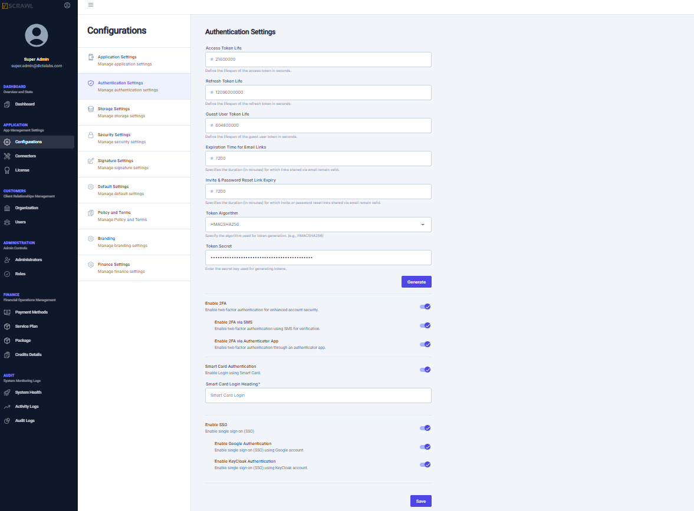

Authentication Settings
The Authentication Settings screen is used to configure various settings to ensure secure collaboration on sensitive document workflows.

Token Configuration
vScrawl provides REST-based APIs for all its operations and uses access tokens and refresh tokens for secure authentication. Using this screen, the administrator can:
- Configure the life span of access and refresh tokens.
- Configure the guest user's access token life span, as guest users may be invited to sign documents.
- Specify these lifespans in milliseconds.
- Define a secure algorithm for token generation, such as HMACSHA256.
Two-Factor Authentication (2FA)
For secure user login to the vScrawl application, Two-Factor Authentication (2FA) can be enabled. Once enabled:
- Users can configure 2FA from their respective user profiles.
- Administrators can specify 2FA methods, including:
- SMS-based authentication.
- Google Authenticator app.
Single Sign-On (SSO)
Administrators can configure login using a user’s Google account to enable the Single Sign-On (SSO) feature.